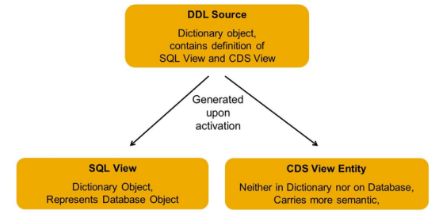
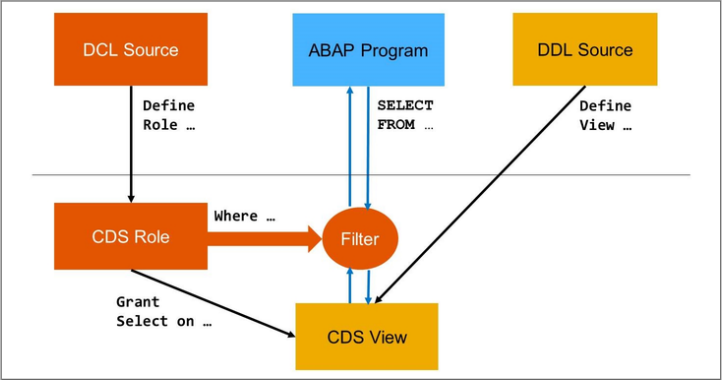

ABAP CDS VIEW Training
结构化查询语言 Structured Query Language (SQL)
SQL的三种子语言
Data ManipulationLanguage (DML)
提供用于读取和更改数据库表和的内容的语句
包含SELECT、INSERT、UPDATE和DELETE等语句。
Data DefinitionLanguage (DDL)
提供用于创建数据库对象（如表和视图）并维护其属性的语句。
DataControl Language (DCL)
涵盖数据完整性和安全性的各个方面。
而 OpenSQL 是 ABAP 语言中内置 的 SQL 变体，仅涵盖 DML 方面。 且 OpenSQL 不仅将自己限制在 SQL 的 DML 部分, 对比MySQL，Oracle时， Open SQL 中也缺少许多描述的 DML 功能 限制了很多的功能，例如 limit , Union
这些限制有两个重要原因：
OpenSQL希望独立于数据库，不仅在语法方面，而且更重要的是在结果方面。必须保证 OpenSQL 语句在所有数据库上提供相同的结果。要做到这一点，最简单的方法是避免标准 SQL的那些特性，在这些特性中，数据库供应商对结果应该是什么样子有不同的看法。一个 例子是算术表达式，其中舍入规则在所有数据库上都不相同。
ABAP 编程的基本性能规则始终是：使不必要的负载远离数据库。一般的假设是，应用程序 程序员遵循此规则，不会过多地使用更复杂的 SQL 功能，即使它们在 OpenSQL 中可用
SAPHANA和对代码到数据的需求 从版本 7.4 开始，ABAP 系统完全支持 SAPHANA 时，这一切都发生了变化。
借助 SAPHANA，SAP 结合了硬件和软件技术的最新发展，以提供最先进的内存数 据库。 但是，SAPHANA不仅仅是一个数据库。多个数据分析引擎和内置应用程序平台允许在数据库层 本身执行详细的数据分析甚至应用程序逻辑。
为了从SAPHANA的功能中获得最大收益，有必要改变编程范式以及传统的应用程序设计。
为什么会有ABAP CDS VIEW?
ABAP Core Data Services (CDS) View是SAP为解决数据访问和数据模型复杂性问题而引入的。传统上，ABAP开发人员不得不在代码中将业务逻辑和数据库操作混合在一起，这会导致代码难以理解和维护。此外，业务逻辑和数据模型也常常分散在多个地方，这会导致数据的一致性问题。
为了解决这些问题，ABAP CDS View被引入，它允许开发人员在较高的抽象层次上定义数据模型和业务逻辑，这样可以让代码更容易理解和维护。同时，由于CDS View可以直接在数据库层面上进行操作，因此也能大幅提升性能表现。
CDS: Core Data Services 核心数据服务 （数据 + 服务）
包含了： DDL ： （model，数据定义）
QL： （Query Language 查询） open SQL 可以访问CDS view
DCL： CDS权限定义
CDS VIEW 简单来说就是一个 VIEW,
区别于原来的 ABAP VIEW,：支持更多的功能，完成更复杂的 VIEW （例如，增加了 外连接，Union，但不仅于此）
是为了帮助我们在 ABAP 服务器上开发，完成代码下推的一种方式，（可以不只运用于 HANA 数据库）
（Code Push Down）将部分逻辑从AP推送到DB层，更好的发挥 SAP HANA 的运算能力
借助VDM, 运用 HANA 数据库上，完成数据建模
属于 HANA 数据库的一部分， 位于HANA XS层(HANA Extended Application Services), 其就是为了创建HANA数据库里的模型和开发原生的HANA应用而生的，使用NATIVE SQL, 脱离了HANA数据库单独谈HANA CDS view没有任何意义。
1.因为是编译运行在 DB 层，相对AP 层会更快
2.代码下移，可以将一些AP层的逻辑下放到 DB 层帮忙处理
数据密集型的计算会下推到数据库层
3.OData / Fiori 的开发需要用到 CDS_VIEW ,
Fiori Element
ABAP CDS View是在ABAP环境中定义和开发的数据服务视图。当你创建一个ABAP CDS View并在你的程序中调用它时，ABAP运行环境会将这个CDS视图转化为SQL语句，并在关联的HANA数据库上执行。
（官方说明是可以在 Eclipse 或者 HanaStudio 进行开发）
如下是安装Eclipse 的步骤：（建议去官网参照最新的步骤）

（Ctrl + ‘左键’）
Abap Devolopment Tools
【注意】如果不是最新的Eclipse版本，需要选择对应的ADT版本，不能直接使用
安装步骤包含在上图
安装ADT 成功后，可以开始新建 ABAP Project:
步骤：File ==> New ==> ABAP Project (/Project)

然后选中我们登入的环境和端口：一直 Next 就行
（这里应该是ADT 直接从GUI 的配置文件中带出来的）


需求：查询 Ticket 的相关数据，把表 ZMKPF & ZMSEG 的数据一张 View 输出 （ZTDM_DDL_TICKET001）
@AbapCatalog.sqlViewName: 'ZTDM_V_TICKET001' //指定了数据库 CDS SQL View 的名字
@AbapCatalog.compiler.compareFilter: true
@AbapCatalog.preserveKey: true
@AccessControl.authorizationCheck: #NOT_REQUIRED
@EndUserText.label: 'TEST - DEMO 2.1'
define view ZTDM_E_Ticket001 //指定CDS View Entity 的名字，
as select from zmkpf as H
left outer join zmseg as I on H.werks = I.werks
and H.mjahr = I.mjahr
and H.ticket = I.ticket
{
key H.werks,
key H.mjahr,
key H.ticket,
key I.mblpo,
H.bwart,
I.matnr,
I.maktx,
I.mblnr,
H.status
}
where
H.ticket = '4000000001'
需求：查询MARD中指定Plant,库存大于0的物料数据 , ( ZTDM_DDL_MARD001 )
@AbapCatalog.sqlViewName: 'ZTDM_V_MARD001'
@AbapCatalog.compiler.compareFilter: true
@AbapCatalog.preserveKey: true
@AccessControl.authorizationCheck: #NOT_REQUIRED
@EndUserText.label: 'TEST - DEMO 2.2'
define view ZTDM_E_MARD001
with parameters
p_Werks : werks_d // 参数名区分大小写
as select from nsdm_v_mard as M // DB的MARD 与 AP的MARD 数据源不同
{
@EndUserText.label: 'Plant'
key M.werks,
@EndUserText.label: 'Storage location'
key M.lgort,
@EndUserText.label: 'Material Number'
key M.matnr,
@EndUserText.label: 'Valuated Unrestricted-Use Stock'
M.labst,
@EndUserText.label: 'Stock in Quality Inspection'
M.insme,
@EndUserText.label: 'Blocked Stock'
M.speme
}
where
werks = $parameters.p_Werks
and(
labst > 0
or insme > 0
or speme > 0
)
【注解】 @AbapCatalog.sqlViewName: 指定了数据库 CDS SQL View的名字，在CDS View激活时，会在数据库层生成对应的SQL View , 和 ABAP SQL View 一样，（最长16个字符，且都为大写 ）
【注解】@AbapCatalog.preserveKey: true 注解的值为TRUE时，SQL view中的key字段使用CDS中定义的key； 值为FALSE时，使用DB table中table的key field.
【注解】@AccessControl.authorizationCheck: #NOT_REQUIRED 权限检查注解，NOT_REQUIRED 为有对应的权限管控时则会执行权限检查，否则不执行
【基本定义】
define view ZMM_DDL_DEMO : 定义的CDS View的名字，CDS View 实体名
as select from zmseg as I
left outer join zmkpf as H on H.werks = I.werks
and H.mjahr = I.mjahr
and H.ticket = I.ticket
as select from : 指定了CDS View的数据源
{ } : 中定义了CDS view中包含哪些字段
where : 指定查询的条件 (where 不是必需的)
【注意】命名时：SQL View name 最长16位字符；全大写
CDS View name最长30位字符，区分大小写可以使用驼峰命名
帮助理解 CDS VIEW

DDL Source 源代码文件:
激活 DDL 源后，将创建两个对象：SQL 视图和 CDS 视图。它们都不能直接编辑
CDS View Entity：（建议使用这个作为SQL 中的数据源）
相对SQL 视图具有更多的语义，但不能在SE11 直接查看数据， 可以在 SQL中使用
CDS 实体的名称在 DEFINEVIEW 语句之后指定
SQL View : 显示为数据字典对象 ，可以用于再SE11查看数据，（注：带参数的不能查看数据)
SQL 视图的名称在 Annotation@ABAPCatalog.sqlViewName 之后指定。它必须与 CDS 实体 的名称不同。与任何词典视图一样，最大长度为 16 个字符。

(先说明，CDS VIEW 还是属于SAP, ABAP 里有的元素 它一样都拥有，Field ,Data Element）
(使用时，可以借助 F2 快捷键 查看元素内容)
| $projection. : | 代指当前CDS VIEW , 可以用来指向当前CDS VIEW 的栏位、参数 |
| $session. | 类似ABAP 的 sy- , 使用系统变量的header 例如：当前日期：$session.system_date 当前端口：$session.clint 系统语言：$session.system_language 登录用户：$session.user |

1.使用 单引号包起来的则为 字符，
根据是否为纯数字 分为 Char 、Numc
2.不使用单引号包起来的，则为数字，允许有小数点，
{
'ABCD字' as Field1, //char
'123.22' as Field2, //numc
// 123.ss 因为有字符，则必须用单引号包起来
123 as Field3, //int
1234 as Field4,
32767 as Field5,
32768 as Field6, // 待验证是否会根据值变换 字符类似(Int1/Int4)
123.22 as Field7,
}
可以用于后续，AP层 循环里面根据某个值判定为某种类型、
描述：CDS中自带的一些运算函数
使用：
- **concat ( )** 拼接两个字符串，
- **substring( )** 获取字符串中的一个子串。
- 更多可用的Build-in函数可以查找ABAP的帮助文档
div(arg1,arg2):输入整数，整除；
mod(arg1,arg2):输入整数，取余；
division(arg1,arg2,dec):输入整数或小数，除法；
abs(arg):取绝对值；
floor(arg):向下取整；
ceil(arg):向上取整；
round(arg,pos):四舍五入，pos保留小数位；
concat(arg1,arg2):字符拼接；
replace(arg1,arg2,arg3):使用arg3替换arg1中所有arg2;
substring(arg,pos,len):从pos开始，截取len长度；
concat_with_space(arg1,arg2,count):使用count个space连接arg1,arg2；
length(arg):返回长度；
left(arg,n):左边n个字符；
right(arg,n):右边n个字符；
lower(arg)：转换小写，numc,dats,tims不允许输入；
upper(arg):转换大写，numc,dats,tims不允许输入；
unit_conversion():单位转换，
Tcode:CUNI维护单位；
currency_conversion():币别转换，
Tcode:OB08,维护币别；
可参考链接：
ABAP - Help > ABAP - Core Data Services (ABAP CDS) > ABAP CDS - Data Definitions > ABAP CDS - DDL for Data Definitions > ABAP CDS - CDS Entities > ABAP CDS - DDIC-Based Entities > ABAP CDS - DDIC-Based Views > CDS DDL - DEFINE VIEW ddic_based > CDS DDL - DDIC-based View, SELECT > CDS DDL - DDIC-based View, SELECT, Operands and Expressions > CDS DDL - DDIC-based View, Expressions > CDS DDL - DDIC-Based View, Built-In Functions > CDS DDL - DDIC-based View, sql_functions >
描述：实现分支结构
使用：
基本语法
case field
when 'A' then 'A1'
when 'B' then 'B2'
else result
END AS field2 // 重点记得最后给上目标栏位
case $parameters.P_SOFLG
when '' then mska.kalab
end as kalab,
复杂嵌套语法; 加上判断条件，if , and
case
when mard.werks = 'F137' AND mard.lgort > 'W101' then mard.labst
例，如下需求，不用单独为了如下功能加上一段循环，（具体情况具体分析）

描述：强制类型转换
case smoker
when 'X' then cast ( forcuram as abap.fltp ) * 1.3
else cast ( forcuram as abap.fltp ) * 0.9
end as final_amount
描述：常用用户处理NULL的状况，为NULL语设定默认值
coalesce( smoker, 'unassigned') as somker_status
描述：帮助完成聚集运算，例如MIN，MAX，COUNT，SUM等
{
planetype,
min(price) as min_price,
max(price) as max_price,
sum(price) as sum_price,
count(*) as count_planes /* 总条数 */
}
group by
planetype
使用：使用聚集运算时，可以使用group by指定聚集的条件，也即按哪些字段进行分组统计。
描述：指定聚集运算过程中的筛选条件
group by
planetype
having
planetype = '747-400'
or count(*) > 60
使用：
描述：与ABAP的连接一致，
as select from zmseg as I
left outer join zmkpf as H on H.werks = I.werks
and H.mjahr = I.mjahr
and H.ticket = I.ticket
描述：UNION两个SELECT的结果集
使用：
as select distinct from sbook
{
carrid as airline_code,
connid as connection_number,
fldate as flight_date
}
where
carrid = 'DL'
union /* 合并两个结果集 */
select distinct from sflight
{
carrid as airline_code,
connid as connection_number,
fldate as flight_date
}
where
planetype = '747-400'
如果结果集中有重复的条目，DISTINCt可排除结果集中的重复条目。
功能：能够将ABAP和特定于组件的元数据添加到任何CDS实体的源代码中。
作用：丰富数据模型，添加一些配置数据
分类：
根据注释的一致性和有效性评估方式：
视图注解: 元素注解：参数注解: 扩展注解: 功能注解：
| 注解名 | 值 | 意义 |
|---|---|---|
| @AbapCatalog.preserveKey: | true | 值为TRUE时，SQL view中的key字段使用CDS中定义的key； |
| flase | 值为FALSE时，使用DB table中table的key field. | |
| @AbapCatalog.sqlViewName: | ABAP 词典中 CDS SQL VIEW 的名称。 | |
| @AccessControl.authorizationCheck | #CHECK | 会隐式执行访问控制，且有语法检查 |
| #NOT_REQUIRED | 与#CHECK 类似，但没有语法检查警告 | |
| #NOT_ALLOWED | 不执行访问控制。 | |
| @ClientHandling.algorithm： | #SESSION_VARIABLE | 自动在Where语句中添加一个client处理语句 |
| 注解名 | 值 | 意义 |
|---|---|---|
| @EndUserText.label: | ；栏位文本描述 | |
数量/金额栏位注解
| Field Annotation | Semantic |
|---|---|
| @Semantics.amount.currencyCode | Amount that references to a currency (@Semantics.quantity.unitOfMeasure) |
| @Semantics.quantity.unitOfMeasure | Amount that references to a unit(@Semantics.unitOfMeasure) |
| @Semantics.unitOfMeasure | Unit |
| @Semantics.currencyCode | Currency |
| @Semantics.text | true / flase (Text in human-readable form) |
用于虚拟视图模型
SAP使用Annotation @VDM.viewType对CDS View进行内部构造和解释
| 注解名 | 值 | 意义 |
|---|---|---|
| @VDM.viewType: # | #BASIC | 基础接口视图 |
| #COMPOSITE | 提供从 BASIC 视图派生和/或组合的数据的视图 | |
| #CONSUMPTION | 供消费的视图 (用于特定应用目的的视图) |
在打算生成 OData 服务时设置此注释。
| 注解名 | 值 | 意义 |
|---|---|---|
| @OData.publish： | true | 当注释@ OData.publish被设置和CDS视图被激活时，生成OData服务 |
| flase |
在ABAP 使用OPEN SQL 时，会自动帮忙传入很多系统值，
但不是在OPEN SQL 上使用时，可能就需要我们自己传入
with parameters
@Environment.systemField: #CLIENT // 隐式传入 sy-mandt
p_mandt : abap.clnt,
可以隐式传参的不仅有 端口号，例如还有 当前系统语言，用户名等
@Environment.systemField: #USER
@Environment.systemField: #SYSTEM_LANGUAGE
简述：功能上和 join 是一样的，在数据库级别上没有区别，使用上需要加上基数（两个表的数量关系）
默认是： (LEFT OUTER JOIN or LEFT OUTER TO ONE JOIN)， 如果需要 INNER JOIN,需要额外添加
和JOIN 的区别：Join 会贪婪加载（ Eager Load ） Association：在不需要join表的数据时，会懒加载（Lazy Load）
它是按需连接，不需要时关联(暴露出来的关联)只是说明了一个关系，除非有人触发它，否则不会执行实际的连接，这样可以提高性能。
Association 更多是为了复杂的业务，嵌套View 的情况下使用 。
关联分三种：
基数：用来表示关联的两个表或视图之间的数据关系，它以[MIN …MAX]的形式包含在关联的定义中。
意思：[0 . .1] =表示目标的基数可以是0或1。同样[0 . .N]表示目标表/视图基数可以从0到N。
【注】- 这个不是必需的，默认基数是：[0..1]
- 它不会在运行时进行验证，但会产生语法检查警告。
最小值是可选的
禁止值
【注意】：不能和带参数的VIEW 一起使用，
或者在 where 条件中使用 被关联表的栏位（ 因为可能会影响到结果集基数 ）。
这里使用了 association 关联到了 zmseg , 并且结果集中，指定了 zmseg 的栏位， 这就是 Ad-hoc association（ 定点关联）
@AbapCatalog.sqlViewName: 'ZTDM_V_TICKET002'
@AbapCatalog.compiler.compareFilter: true
@AbapCatalog.preserveKey: true
@AccessControl.authorizationCheck: #NOT_REQUIRED
@EndUserText.label: 'TEST - DEMO 3.3.1' // Ad-hoc association
define view ZTDM_E_Ticket002
as select from zmkpf as H
// left outer join zmseg as I
association [0..*] to zmseg as _zmseg on H.werks = _zmseg.werks // association
and H.mjahr = _zmseg.mjahr
and H.ticket = _zmseg.ticket
{
key H.werks,
key H.mjahr,
key H.ticket,
key _zmseg.mblpo, //指定被关联Table的栏位
bwart, //没有指定数据源时，会取主数据源
_zmseg.matnr,
_zmseg.maktx,
_zmseg.mblnr,
_zmseg,
H.status
}
where
H.ticket = '4000000001'
创建视图的底层SQL: ZMKPF 外连接到 ZMSEG
虽然使用了 associations，但是并没有 _zmseg 就是暴露出来的 association，但是在结果集中没有使用这个table的栏位，使用时两个表并不会建立连接。这张就是 exposed association:（全部关联）
@AbapCatalog.sqlViewName: 'ZTCC_V_TICKET003'
@AbapCatalog.compiler.compareFilter: true
@AbapCatalog.preserveKey: true
@AccessControl.authorizationCheck: #NOT_REQUIRED
@EndUserText.label: 'TEST - DEMO 3.3.2' // exposed association
define view ZTCC_E_Ticket003
as select from zmkpf as H
// left outer join zmseg as I
association [0..*] to zmseg as _zmseg on H.werks = _zmseg.werks
and H.mjahr = _zmseg.mjahr
and H.ticket = _zmseg.ticket
{
key H.werks,
key H.mjahr,
key H.ticket,
bwart,
_zmseg,
H.status
}
where
H.ticket = '4000000001'
创建视图的底层SQL: 可以看到并没有取连接 ZMSEG

在 Demo 3.3.2.1 的基础上，对被关联的 Table: ZMSEG 增加条件限制，对Table: ZMSEG生效，这个就是 filtered associations.
@AbapCatalog.sqlViewName: 'ZTDM_V_TICKET004'
@AbapCatalog.compiler.compareFilter: true
@AbapCatalog.preserveKey: true
@AccessControl.authorizationCheck: #NOT_REQUIRED
@EndUserText.label: 'TEST - DEMO 3.3.3' //filtered associations
define view ZTDM_E_Ticket004
as select from zmkpf as H
// left outer join zmseg as I
association[0..*] to zmseg as _zmseg on H.werks = _zmseg.werks
and H.mjahr = _zmseg.mjahr
and H.ticket = _zmseg.ticket
with default filter _zmseg.mblnr <> '' //增加过滤条件
{
key werks,
key H.mjahr,
key H.ticket,
key _zmseg.mblpo,
bwart,
_zmseg.matnr,
_zmseg.maktx,
_zmseg.mblnr,
_zmseg,
H.status
}
where
H.ticket = '4000000001'
创建视图的底层SQL: 在关联条件时，加上了 mblnr 不等于空的条件

association 默认的情况是 LEFT OUTER MANY TO ONE JOIN，也可能会因基数影响会是 LEFT OUTER MANY TO MANY JOIN ，但都属于是 LEFT OUTER JOIN
如果需要使 association 为 INNER JOIN，需要额外添加 inner 。
注意 使用内连接方式是，请不要填写基数，否则就会成会两张表先内连接，内连接的结果再取外连接副表，不是期望结果！！！
（这种连接方式其实更适用于在多层 View 嵌套的情况下使用，正常两个Table 可以直接使用 inner join）
@AbapCatalog.sqlViewName: 'ZTDM_V_TICKET005'
@AbapCatalog.compiler.compareFilter: true
@AbapCatalog.preserveKey: true
@AccessControl.authorizationCheck: #NOT_REQUIRED
@EndUserText.label: 'TEST - DEMO 3.3.4'
define view ZTDM_E_Ticket005
as select from zmkpf as H
// left outer join zmseg as I
association to zmseg as _zmseg on H.werks = _zmseg.werks // association
and H.mjahr = _zmseg.mjahr
and H.ticket = _zmseg.ticket
{
key H.werks,
key H.mjahr,
key H.ticket,
key _zmseg[inner].mblpo, //添加inner后，则会内连接 zmseg
bwart,
_zmseg.matnr,
_zmseg.maktx,
_zmseg.mblnr,
_zmseg,
H.status
}
where
H.ticket = '4000000001'
创建视图的底层SQL:

Demo 3.3.2.5 增加复杂嵌套视图 View , 可以联合到 VDM 一起 Demo
ABAP CDS 支持基于数据控制语言DCL(Data Control Language)的访问控制。ABAP CDS中的访问控制进一步限制了从ABAP CDS中的 non-abstract CDS 实体中返回的数据。CDS访问控制主要基于以下几个方面:
（non-abstract CDS 实体 ：可以理解为面向对象时的抽象类 ）
在创建了CDS Entity之后你希望在DDL中保护它不被未授权访问，这时就可以使用基于eclipse的ABAP IDE中的向导为授权对象创建DCL源，在DCL源文件中定义CDS角色。
在创建DDL时使用DCL语句DEFINE role为CDS Entity定义CDS角色。这样当访问这个CDS Entity时，会检查以下内容:
IF 为此CDS Entity定义CDS角色.
IF 当前用户是否具有所需的权限.
访问控制管理将使用传统的权限管理检查当前用户的权限，并仅读取有授权的数据.
ELSE.
ENDIF.
ELSE.
返回全部数据
ENDIF.
如果为非抽象CDS实体定义了具有访问规则的CDS角色，则在每次读取ABAP SQL时隐式计算访问条件，除非使用注释@AccessControl的值#NOT_ALLOWED关闭访问控制。authorizationCheck或在ABAP SQL查询的FROM子句中添加WITH PRIVILEGED ACCESS。如果启用了访问控制，则只读取符合访问条件的数据。
每个CDS角色都在其单独的DCL源代码(可以理解为当前这个CDS VIEW)中定义。这些DCL源代码片段只能在ABAP开发工具(ADT)中编辑
基本原理图：

【注意】权限检查只检查这个 CDS Entity, CDS SQL View 并不会被检查,也不能被检查，所以在日常使用时尽可能使用 CDS Entity

@EndUserText.label: 'TEST - Access Control'
@MappingRole: true
define role ZTDM_DCL_STOCK001 {
grant
select
on
cds_entity
where
entity_element_1 = 'literal_value'
or entity_element_2 = aspect user;
}
【注解】@EndUserText.label: 'TEST - Access Control' // DCL 描述
【注解】@MappingRole: true 是默认把这个role给所有用户。 false 目前ABAP CDS 还不支持
define role : 定义 CDS Role 名，会默认分配给访问的 用户
grant select on cds_entity： 指定被增加权限管控的 CDS Entity， 一个CDS Role 可以指定多个 CDS Entity
where：权限管控的条件，
相关使用的注解
@AccessControl.authorizationCheck: #NOT_REQUIRED "有权限就检查，没有就不检查
#CHECK "需要检查权限
#NOT_ALLOWED "不执行权限检查
Demo: CDS Role - ZTDM_DCL_TICKET002 为 CDS Entity - ZTDM_E_Ticket002 增加权限管控
增加权限检查: 增加字面条件检查 和 PFCG权限检查
@EndUserText.label: 'TEST - DCL for ZTDM_E_TICKET002'
@MappingRole: true
define role ZTDM_DCL_TICKET002 {
grant
select on ZTDM_E_Ticket002 //权限检查只检查这个 CDS Entity, CDS SQL View 并不会被检查,也不能被检查
where (werks) = aspect pfcg_auth (ZTCCAO0001, ZTCCWERKS, ACTVT = '03' )
AND bwart <> '912';
}
在有多个权限检查时，使用并集的关系，
【注意】测试时请使用无权限账号，开发账号数据访问权限较大，并不会被权限管控卡出
【补充创建测试数据】
1.SU20 创建权限字段 Authorization Field
2.SU21 创建权限对象类 & 权限对象 Authorization Object （ACTVT添加）
3.PFCG 权限分配 创建权限角色 （这里配置需要筛选的具体条件）
4.SU01 为账户分配 创建的角色
【测试时】
可以使用 T-code: stauthtrace 做权限检查的跟踪

假设为 CDS VIEW A 创建了 Access Control A , 然后 CDS VIEW B 用 A 作为数据源，
当在ABAP 访问 CDS VIEW B 时，并不会被 Access Control A 卡住，直接忽略。
@AbapCatalog.sqlViewName: 'ZTDM_V_TICKET006'
@AbapCatalog.compiler.compareFilter: true
@AbapCatalog.preserveKey: true
@AccessControl.authorizationCheck: #NOT_REQUIRED
@EndUserText.label: 'TEST - DEMO 4.1'
define view ZTDM_E_Ticket006 as select from ZTDM_E_Ticket002
{
key werks,
key mjahr,
key ticket,
key mblpo,
bwart,
matnr,
maktx,
mblnr,
status
}
当在ABAP访问 ZTDM_E_Ticket006时，并不会执行到 CDS Role ZTDM_DCL_TICKET002 的权限管控
概念图:

定义 ：define table function ZTCC_DDL_TANLE
数据源：implemented by method ztcc_cds_tf01=>get_lgort_nums;
引用现有的AMDP函数，没有则需要额外创建这个类取实现 AMDP 方法，
（在ABAP上实现AMDP 方法，但在METHOD 和 ENDMETHOD 是用SQL Script 编写的，此语句将会被 S4 HANA 数据库编译运行）
使用：和 Table 或者 View 一样被使用，可以在 ABAP 程序 ， CSD_VIEW 中使用，
（额外需要注意传参上，）
CDS框架通过在数据库上调用分配的函数来执行CDS表函数中的SELECT
思考：其实功能使用上，和CDS_View 没有上面区别，但可以借助到 类来帮助实现逻辑，类方法里面可以实现更加复杂的逻辑
相当于CDS_View 的功能以及满足不了，可以使用Table Function 来实现更加复杂的功能，
难点在于，还要再多学会 AMDP 面向对象的开发，或许我们懂面向对象的基本概念，但是ABAP 类的语法还需要再学习


@EndUserText.label: 'TEST - DEMO 5.1' // Test for Table Function
define table function ZTDM_DDL_TFunc0001 //定义名
with parameters //入参
@Environment.systemField: #CLIENT //隐式传参
p_mandt: abap.clnt,
p_matnr: matnr
returns { //返回结果
mandt : abap.clnt; //系统参数
matnr : matnr;
werks : werks_d;
lgort : lgort_d;
}
implemented by method ztmd_cl_cds_tfunc_0001=>get_lgort; //数据源，激活时不检查是否真的存在
with parameter : 定义需要使用该 CDS Table Function 需要传入的参数 （mandt 是否是必需的，还需要再确认）
（虽然这不是必需的，但建议有，因为 client 是需要通过传参的方式输入）
returns { }: Table Function 返回的结果栏位
implemented by method: （数据来源）实现AMDP接口 类的公共静态方法
2.补充代码
实现AMDP接口 IF_AMDP_MARKER_HDB (这是强制性的)
定义带有添加的 FOR TABLE FUNCTION 的公共静态方法
（只要补充静态方法就行 ）
该静态方法不自定义参数，使用关键字 FOR TABLE FUNCTION ，从CDS Table Function 获取到 该方法的参数。
CLASS ztmd_cl_cds_tfunc_0001 DEFINITION
PUBLIC
FINAL
CREATE PUBLIC .
PUBLIC SECTION.
INTERFACES: if_amdp_marker_hdb.
CLASS-METHODS:
get_lgort
FOR TABLE FUNCTION ZTDM_DDL_TFunc0001.
PROTECTED SECTION.
PRIVATE SECTION.
ENDCLASS.
*实现公共静态方法
CLASS ztmd_cl_cds_tfunc_0001 IMPLEMENTATION.
METHOD get_lgort BY DATABASE FUNCTION
FOR HDB
LANGUAGE SQLSCRIPT
OPTIONS READ-ONLY
USING nsdm_e_mard.
RETURN SELECT DISTINCT
t.mandt,
t.matnr,
t.werks,
t.lgort
from nsdm_e_mard as t
WHERE t.mandt = :p_mandt
and t.matnr = :p_matnr;
ENDMETHOD.
ENDCLASS.
实现的静态方法，不能在ABAP 程序中使用，可以被使用在其他的AMDP 方法中，
不同与其他AMDP 方法，该方法仅具有回传 return 参数， 以及由Table Function 定义的导入参数，
附加字段的意义：
BY DATABASE FUNCTION :
其使用了BY DATABASE FUNCTION， 定义了一个用于实现数据库函数的AMDP function实现, 实现CDS Table Function 的AMDP方法实现的参数接口，取自方法声明中添加FOR table function后指定的CDS Table Function的定义。
FOR db：定义了使用该AMDP方法的数据库系统，HDB 代表 SAPHANA 数据库。这是目前 唯一支持的值。
LANGUAGE db_lang: 定义了实现方法所用的特定于数据库的语言, 目前使用的是 SQLSCRIPT。

OPTIONS: 用于指定特定于数据库的选项, 对于CDS来说 READ-ONLY 是唯一受支持的选项。
USING: 用于声明由 ABAP 字典管理的，在AMDP方法中使用的数据库对象（支持透明表和字典视图，不支持使用CDS VIEW Entity）。
简单说就是数据源，使用的是ABAP 字典中的对象，虽然不支持 CDS Entity , 但可以使用 CDS DDL Source 生成的 CDS SQL View。
ABAP - Help > ABAP - Programming Language > Processing External Data > ABAP Database Access > ABAP Managed Database Procedures (AMDP) > AMDP - Methods >
Virtual Data Models (VDM)
使用到的注解
| 注解名 | 值 | 意义 |
|---|---|---|
| @VDM.viewType: # | #BASIC | 视图构成核心数据基础，没有数据冗余。 |
| #COMPOSITE | 提供从BASIC视图派生和/或组合的数据。 | |
| #CONSUMPTION | 于特定的应用程序目的，并基于基本或复合或交易视图定义。 |
简单说：
通常一个虚拟数据模型由4部分组成：
Basic interface views 基础接口视图
基本接口视图构建在数据库表之上。基本接口视图是虚拟数据模型的底层。只有基本接口视图才能访问数据库表。所有其他的CDS视图都重用，可以从基本接口视图取它们的数据。
Comosite Interface Views复合接口视图
Composite interface views是建立在Basic interface views和其它Composite interface views之上的。它在虚拟数据模型中的中间层。这种项目数据一般用于应用程序和Consumption views消费视图，或者组合来自多个数据源的数据以从其他复合视图中重用。
Consumption Views消费视图
Consumption Views是建在Composite interface views之上的，是虚拟数据模型的最上层，顾名思义就是最终被用来消费用的
使用：
避免冗余ABAP CDS View 使用consistent name提供consistent model help to maintain an overview 从业务角度将数据结构化为一个个逻辑单元，更多用于事务和分析应用程序以及API。
参考链接
参考实例图
需求：根据 ABAP Function - ZIMDE073 的逻辑 创建了如下模型：
Basic Views： ZTDM_E_MSKA001 , ZTDM_E_MSLB001 ，ZTDM_E_MARD001
作用：分别从 底层表 获取到库存大于0数据（MARD,MSKA,MSLB）
Composite Views： ZTDM_E_I_Stock
作用：把前面三张View 的数据根据业务逻辑 合并到一个View 中
Consumption Views： ZTDM_E_C_Stock
作用：把 ZTDM_E_I_Stock 的数据 整理后发布出去，供AP ，Odata 使用，
可以在此层视图根据需求添加上 Access Control
编辑时分别添加上注解 @VDM.viewType: 以及对应的值
ZTDM_DDL_MARD001
此篇代码，Demo 2.2.2 已经展示
ZTDM_DDL_MSKA001
@AbapCatalog.sqlViewName: 'ZTDM_V_MSKA001'
@AbapCatalog.compiler.compareFilter: true
@AbapCatalog.preserveKey: true
@AccessControl.authorizationCheck: #NOT_REQUIRED
@EndUserText.label: 'TEST - DEMO 6.1' //MSKA Inventory
@VDM.viewType: #BASIC
define view ZTDM_E_MSKA001
with parameters
P_WERKS : werks_d
as select from mska
{
@EndUserText.label: 'Plant'
key werks,
@EndUserText.label: 'Storage location'
key lgort,
@EndUserText.label: 'Material Number'
key matnr,
@EndUserText.label: 'Batch Number'
key charg,
@EndUserText.label: 'Special Stock Indicator'
key sobkz,
@EndUserText.label: 'Sales and Distribution Document Number'
key vbeln,
@EndUserText.label: 'Item number of the SD document'
key posnr,
@EndUserText.label: 'Valuated Unrestricted-Use Stock'
kalab
}
where werks = $parameters.P_WERKS
and kalab > 0
ZTDM_DDL_MSLB001
@AbapCatalog.sqlViewName: 'ZTDM_V_MSLB001'
@AbapCatalog.compiler.compareFilter: true
@AbapCatalog.preserveKey: true
@AccessControl.authorizationCheck: #NOT_REQUIRED
@EndUserText.label: 'TEST - DEMO 6.1' //MSLB Inventory
@VDM.viewType: #BASIC
define view ZTDM_E_MSLB001
with parameters
P_WERKS : werks_d
as select from mslb
{
@EndUserText.label: 'Material Number'
key matnr,
@EndUserText.label: 'Plant'
key werks,
@EndUserText.label: 'Batch Number'
key charg,
@EndUserText.label: 'Special Stock Indicator'
key sobkz,
@EndUserText.label: 'Account Number of Supplier'
key lifnr,
@EndUserText.label: 'Valuated Unrestricted-Use Stock'
lblab,
@EndUserText.label: 'Stock in Quality Inspection'
lbins
}
where werks = $parameters.P_WERKS
and ( lblab > 0 or
lbins > 0 )
ZTDM_DDL_I_Stock
@AbapCatalog.sqlViewName: 'ZTDM_V_I_STOCK '
@AbapCatalog.compiler.compareFilter: true
@AbapCatalog.preserveKey: true
@AccessControl.authorizationCheck: #NOT_REQUIRED
@EndUserText.label: 'TEST - DEMO 6.1'
@VDM.viewType: #COMPOSITE
define view ZTDM_E_I_Stock
with parameters
P_WERKS : werks_d ,
P_NLFLG : char1 ,
P_SOFLG : char1 ,
P_SPFLG : char1 ,
P_BKFLG : char1
as select from ZTDM_E_MARD001
( p_Werks : $parameters.P_WERKS )
as mard
left outer join ZTDM_E_MSKA001
( P_WERKS : $parameters.P_WERKS )
as mska
on mska.werks = mard.werks
and mska.lgort = mard.lgort
and mska.matnr = mard.matnr
left outer join ZTDM_E_MSLB001
( P_WERKS : $parameters.P_WERKS )
as mslb
on mslb.werks = mska.werks
and mslb.matnr = mska.matnr
{
key mard.werks,
key mard.lgort,
key mard.matnr,
mard.labst,
mard.insme,
case $parameters.P_BKFLG
when '' then mard.speme
end as speme,
case $parameters.P_SOFLG
when '' then mska.kalab
end as kalab,
case $parameters.P_SPFLG
when '' then mslb.lblab
end as lblab,
case $parameters.P_SPFLG
when '' then mslb.lbins
end as lbins
}
ZTDM_DDL_C_Stock
@AbapCatalog.sqlViewName: 'ZTDM_V_C_STOCK'
@AbapCatalog.compiler.compareFilter: true
@AbapCatalog.preserveKey: true
@AccessControl.authorizationCheck: #NOT_REQUIRED
@ClientHandling.algorithm: #SESSION_VARIABLE
@EndUserText.label: 'TEST - DEMO 6.1' //For Function - ZIMDE073
@VDM.viewType: #CONSUMPTION
define view ZTDM_E_C_Stock
with parameters
P_WERKS : werks_d ,
P_NLFLG : char1 ,
P_SOFLG : char1 ,
P_SPFLG : char1 ,
P_BKFLG : char1
as select from ZMM_DDL_STOCK_I( P_WERKS: $parameters.P_WERKS,
P_NLFLG: $parameters.P_NLFLG,
P_SOFLG: $parameters.P_SOFLG,
P_SPFLG: $parameters.P_SPFLG,
P_BKFLG: $parameters.P_BKFLG
)
as STOCK
{
key STOCK.werks,
key STOCK.lgort,
key STOCK.matnr,
STOCK.labst,
STOCK.insme,
STOCK.speme,
STOCK.kalab,
STOCK.lblab,
STOCK.lbins
}
安装运行环境
SAP Development Tools (ondemand.com)
ABAP CDS VIEW 开发指导
Annotation Propagation | SAP Help Portal
About ABAP Programming Model for SAP Fiori
ABAP 帮助文档
https://help.sap.com/doc/abapdocu_753_index_htm/7.53/en-US/index.htm?file=abencds.htm
SAP HANA 开发者指导
ABAP CDS VIEW 注释：
// 1.单行注释
/*
2.段落注释
*/
注释快捷键：Ctrl + Shift + '<'
取消注释快捷键：Ctrl + Shift + '>'
【注】在编写AMDP类中 快捷键同样，需要注意快捷键冲突
F2 ：查看某个元素的内容
Ctrl + 左键： 可查看被使用的 Table 或者 View 的具体定义文件
1.快捷键查看：
Windows ==> Performanse ===> Key
2.代码补全
3.跳转
F3: 跳到定义处 （比如查看参数在哪里被创建的）
Alt + < , ALT + >
4.检查某个东西在哪里使用过：
Ctrl + Shift + g
5.替换：
右键 --> Rename
6.Debug
Debug 中的快捷和 GUI 一样
9.在Eclipse 里面用SAP GUI
Ctrl + '6'
版本：2024.05.17 -- Cheyenne
使用&查看 markdown 文档：
从别处 获取到 markdown 文档，请注意不仅要获取文档，还要获取 存放图片的文件夹
在文档图片的地址注意是 绝对路径，还是相对路径，
查看的软件：
Typora： 这个最好用，但是需要付费，目前代码块 对ABAP CDS VIEW 语法没有适配的
Marktext: Github 开源 ，风格不同于 Typora
以插件的形式：类似用 Vscode 安装插件打开，或者其他软件的插件，